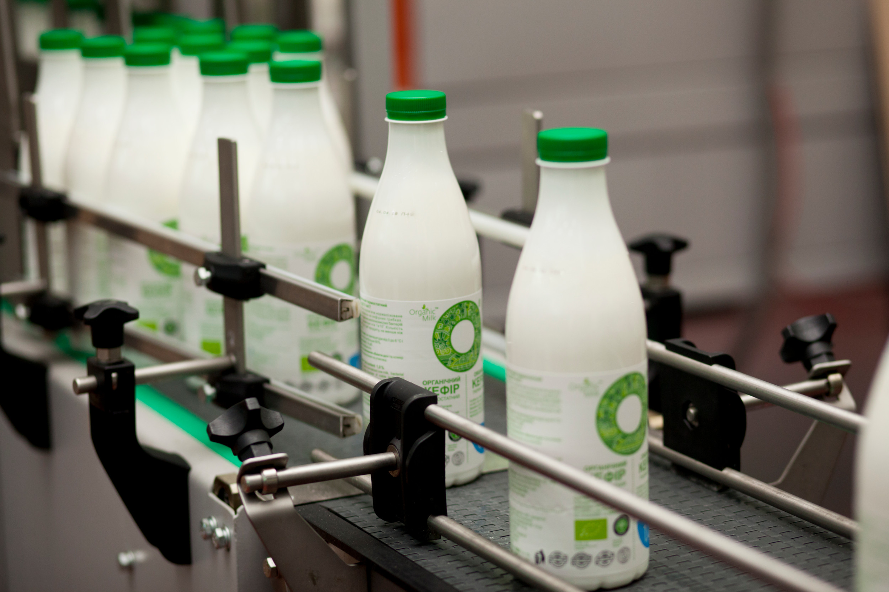

Our Farm-to-Home Process
At FreshDairy, quality begins at the farm and continues until the product reaches your doorstep. Our carefully monitored process ensures freshness, safety, and exceptional taste.
- Natural Grazing: Cows graze freely on lush green pastures.
- Hygienic Milking: Milked daily in clean, stress-free conditions.
- Immediate Cooling: Preserves nutrients and natural flavor.
- Quality Testing: Multiple safety and purity checks.
- Gentle Processing: Minimal pasteurization to retain goodness.
- Eco Packaging: Recyclable, food-grade packaging materials.
- Fast Delivery: Delivered fresh within hours of processing.
